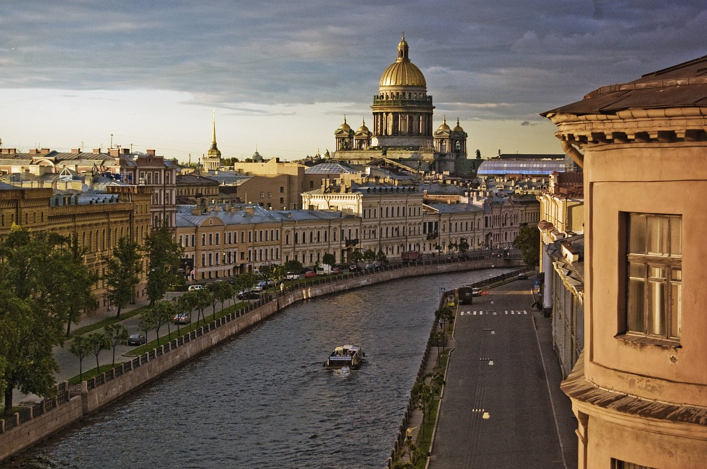
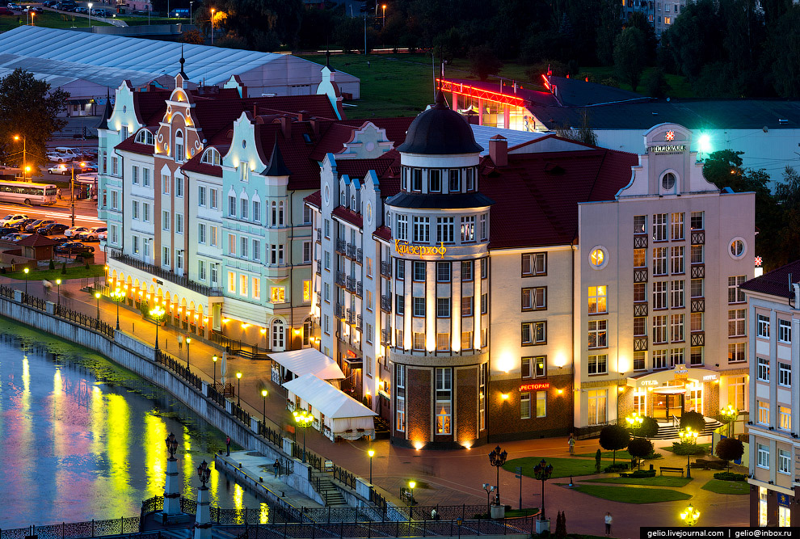

Едем узнавать Россию
Путешествия по России врываются в нашу жизнь внезапно. Кто-то из вас всегда хотел поехать, но откладывал.Кто-то, наоборот, сторонился и дистанцировался, мотивируя это отсутствием сервиса. А для кого-то и вовсе ничего не поменялось.
Автор: Perito, медиа о путешествиях и перемещенииПерейти на сайт
Санкт-Петербург
Санкт-Петербург — один из самых красивых городов мира, второй по значимости город России. Тысячи
туристов приезжают сюда, чтобы окунуться в культурную жизнь Северной столицы, посетить всемирно
известные музеи,дворцы, увидеть волшебные белые ночи, мосты и каналы.
Основанный Петром Великим город имеет богатую историю. За изящным парадным фасадом скрывается город
с сильным характером, сохраняющий достоинство в любых ситуациях, город-герой, выстоявший в
тяжелейшую блокаду. Санкт-Петербург сегодня — самый северный город-миллионер (с населением 5,3 млн
человек), крупный культурный и экономический центр страны.
Калининград
Калининград — уютный уголок Европы в самой западной части России. Город, как и вся Калининградская
область, находится в отдалении от основной территории России, между Литвой и Польшей. До 1945 года
местные земли принадлежали Пруссии, а Калининград, который в то время назывался Кёнигсбергом, был
столицей Восточной Пруссии. О немецком прошлом города напоминают старинные жилые дома, католические
церкви, бывшие городские ворота и форты.
В Калининграде есть всё, что делает город интересным маршрутом для путешественника: богатая
история,прекрасные памятники архитектуры, ухоженные парки, разноплановые музеи, модные кафе и бары.
Он входит в пятёрку городов, которые оставляют у россиян самые яркие впечатления.